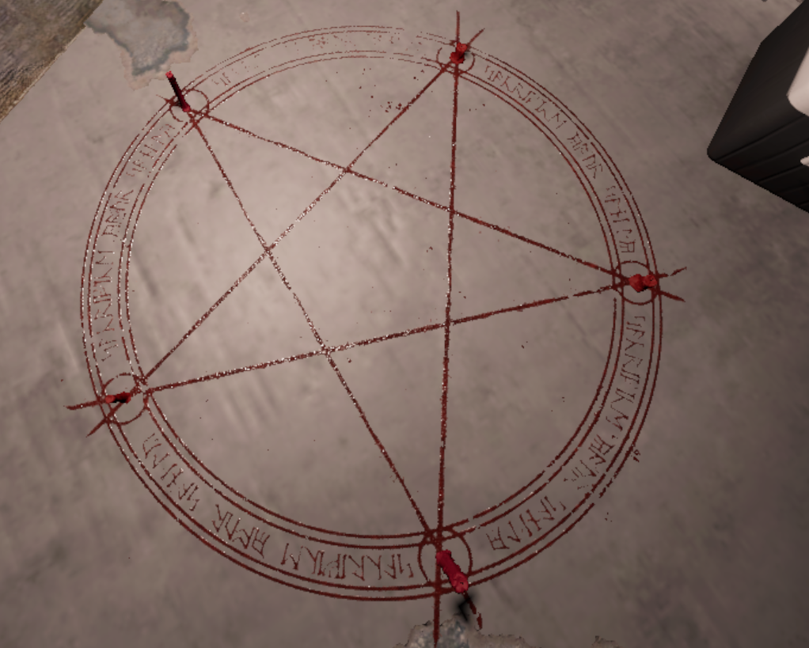

Проклятые предметы
Шесть из семи возможных проклятых предметов можно подобрать и использовать в любое время, находясь внутри здания (за пределами локации предмет работать не будет), тогда как круг призыва привязан к одному заранее определённому месту на карте. Оставшиеся шесть предметов, которые можно подобрать, подобно штативу, требуют, чтобы игрок не держал предмет при их подборе, и если игрок переключается на другой предмет, он выронит проклятый предмет из рук. В одной игре на карте может существовать только один случайный проклятый предмет. В определенных сложностях проклятые предметы могут появляться по разному!
Доска Уиджи
Предмет, при помощи которого можно пообщаться с призраком, путём задавания вопросов, но за каждый вопрос вы будете терять определённое количество рассудка. Сперва нужно использовать доску, чтобы на ней появилась планшетка (ПКМ), и можно задать следующие типы вопросов: Местонахождение призрака, кость, возраст призрака, уровень рассудка. Вопрос о местоположении призрака или кости отнимет 50% рассудка. Можно вызвать проклятую охоту попросив сыграть в прятки. Если положить ЭМП рядом с доской, то оно выдаст 2-й или 5-й уровень ЭМП (если такая улика есть). Если на вопрос не хватает рассудка, доска ломается и начинается проклятая охота. При завершении сеанса, необходимо попрощаться с доской, иначе доска сломается и начнётся проклятая охота.
Зачарованное зеркало
Проклятый предмет, который обычно висит на стенах в коридорах. При использовании показывает любимую комнату призрака. Пока вы смотрите в зеркало, ваш рассудок быстро понижается по 5% в секунду, когда вы только начинаете смотреть в зеркало, вам тратиться сначало 20% рассудка сразу. Если у вас 0% рассудка, зеркало треснет и начнётся проклятая охота.
Обезьянья лапа

Способна исполнять ваши желания в виде эффектов как на игрока, так и на призрака. Может менять погоду, возрадить игрока(возможно умереть самому), получить знания и вычеркнуть 1 из улик(начинает проклятую охоту, ты становишься почти глухим и слепым), может отрыть дверь во время охоты, но замедляет игрока на время, может создать укрытие, увеличить актив призрака(ломает електро щит), начать проклятую охоту, сделать 50% рассудка, закрыть призрака в комнате(через минуту будет проклятая охота). Всего желаний 5, чем выше сложность тем их меньше.
Кукла вуду
Проклятый предмет, при использовании которого одна из игл воткнётся в куклу. Каждая воткнувшаяся игла заставит призрака взаимодействовать с окружением и отнимет 5% рассудка. Если игла втыкается в сердце куклы, то начинается проклятая охота, и отнимается 10% рассудка. Если на использование куклы игроку не хватает рассудка, то в куклу воткнутся сразу все иглы.
Шкатулка
Представляет собой маленькую деревянную музыкальную шкатулку. Может быть поставлена на пол путём нажатия кнопки F. При активации начинает проигрывать мелодию, и можно будет услышать как призрак подпевает под неё. Если призрак далеко, то его можно только услышать, а если призрак окажется в 5 метрах от шкатулки, он материализуется и начнёт к ней приближаться. Если призрак дойдёт до шкатулки, либо если игрок бросит шкатулку в активированном состоянии, призрак начнёт проклятую охоту. Мелодия от шкатулки истощает рассудок игрока, чем ближе, тем быстрее. Шкатулку можно использовать только один раз. Мелодия проигрывается определённое время, если же ничего не произойдёт, то шкатулка просто закроется и станет бесполезной.
Карты Таро
Представляет собой колоду из 10 случайных карт Таро. Эти карты либо помогают игроку (восстанавливают рассудок до 100%, воскрешают мёртвого игрока, увеличивает активность призрака, закрывает призрака в комнате на время), либо же наоборот вредят (снижают рассудок до 0%, мгновенно убивают игрока, вызвать охоту, начать ивент).
Круг призыва
Проклятый предмет, появляющийся в локации на полу. Представляет собой пентаграмму с пятиконечной звездой. На каждом конце звезды есть свеча. Если зажечь все свечи, по центру круга появится призрак в своём физическом облике. Через пару секунд после этого начнётся проклятая охота. Если же до того, как зажечь все свечи, началась обычная охота, призрак телепортируется в центр круга и без задержек сразу же атакует игрока. Повторно круг использовать нельзя.